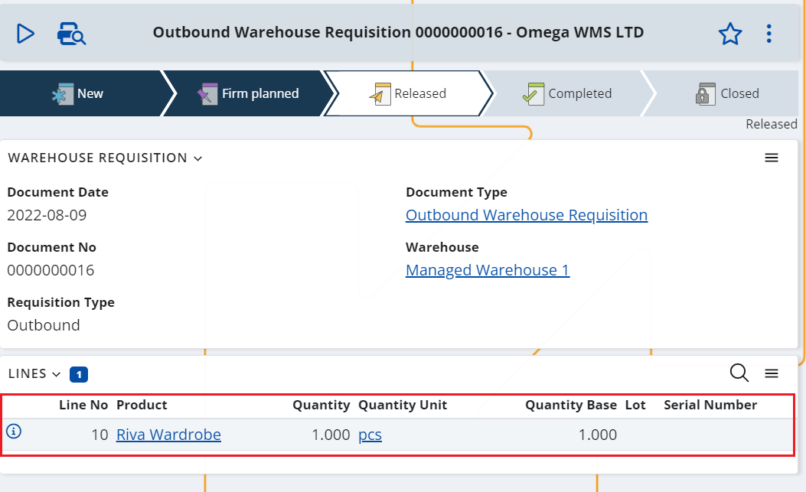

Working with Composite Products
Composite Products are usually sold and purchased in their entirety but are stored as separate components (boxes) in the warehouse.
Selling a composite product
We already set up our composite product definition, following the steps in the How to create Composite Products section.
Now, let's imagine that we have a customer who wants to buy it, to buy a wardrobe.
We are creating a Sales Order for 1 wardrobe.
The Sales Order document flow generates a Store Order, which is the link to the WMS module. It generates an Outbound Warehouse Requisition that informs the WMS module that it needs to dispatch 1 wardrobe. 
The Warehouse Requisition creates an Outbound Warehouse Order but the WMS, and more precisely the LOG0502 generation procedure, recognizes that the product is, in fact, a composite product.
For this reason, the requisition line is broken down into two types of lines:
- Dispatch (comp) – a component dispatch line for each one of the composite product’s components
- Kit – and a kit line for the composite product itself

- These lines are then executed by the warehouse workers using the WMS Worker app.
- Dispatch (comp) lines are executed as usual for dispatch operations.
- Kit line is executed after the Dispatch (comp) lines. It is used for fulfilling the parent (requisition) line and performing a control. How the control is performed depends on the specified level of control. For more information, see Levels of control for composite products .
- Once the Warehouse Order has been finished the execution information is returned to the Inventory module (the Store Order). Then the Inventory module creates a Store Transaction for the dispatch composite product and the flow continues as normal (as it would for an ordinary product).
Purchasing a composite product
The principles for purchasing a composite product are very similar to the principles for buying one.
We are creating a procurement document for 1 wardrobe. This document could be a Requisition, Purchase Order, or Receiving Order depending on the company's usual process.

The procurement document flow generates a Store Order, which is the link to the WMS module. It generates an Inbound Warehouse Requisition that informs the WMS module that it needs to receive 1 wardrobe.
The Warehouse Requisition creates an Inbound Warehouse Order but the WMS, and more precisely the LOG0502 generation procedure, recognizes that the product is, in fact, a composite product (LOG0502).
For this reason, the requisition line is broken down into two types of lines:
- Receive (comp) – a component receive line for each one of the composite product’s components
- Dekit – and a dekit line for the composite product itself
- These lines are then executed by the warehouse workers using the WMS Worker app.
- Receive (comp) lines are executed as usual for receive operations.
- Dekit line can be placed before or after the Receive (comp) lines. It is used for fulfilling the parent (requisition) line and performing a control. The position of the Dekit line and how the control is performed depends on the specified level of control. For more information, see Levels of control for composite products .